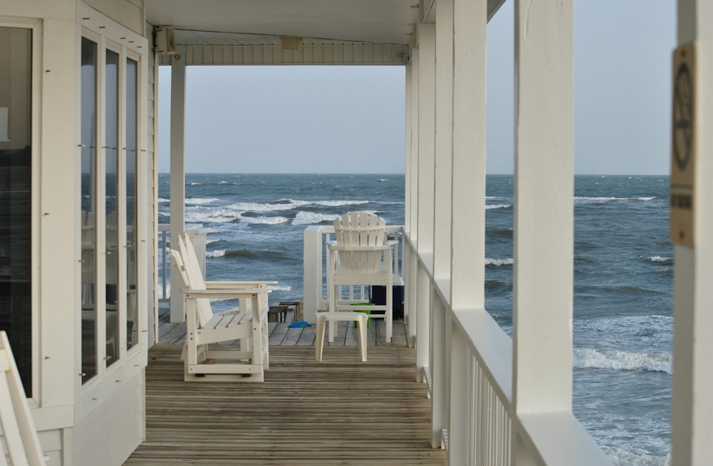

For a Northern Beaches renovation, the most useful first step is to define scope, access and approval issues before seeking prices. The source page points to bathroom, kitchen, laundry, apartment, whole home and coastal projects, and says a standard full bathroom strip out and rebuild is usually about five to eight weeks. A stronger brief includes the rooms involved, property type, budget, timing, access limits and any strata or council questions.
For homeowners comparing home renovations northern beaches options, the practical issue is whether the brief explains the room changes, site limits and approval questions clearly enough for a written quote to mean anything. See Northern Beaches Renovation for the current service details.
Home Renovations Northern Beaches Explained
Northern Beaches Renovation puts the useful questions up front: what feels broken now, what needs replacing, what access looks like, where waterproofing or approvals may affect the job, and what the finished space needs to do day to day. That order matters because a quote is only comparable when the same assumptions sit underneath it.
On the Northern Beaches, the source page highlights recurring constraints such as salt air, older housing stock, strata buildings and tight access. Before asking for prices, note whether the property is a house, townhouse or unit, whether parking or lift bookings matter, and whether the work is in a wet area. Those details often shape labour, sequencing and what needs to be included in writing.
Match the brief to the type of renovation
Different jobs need different questions. Bathroom work can involve strip out, waterproofing, tiling and fit off, so the brief should separate cosmetic changes from anything that affects plumbing or layout. Kitchen work is more likely to turn on layout, cabinetry, benchtops and trade coordination. Laundry upgrades lean on storage, ventilation and wet area detailing rather than appearance alone.
Apartment projects need another filter again. The source page points to strata units, working hour rules, lift access and compact layouts, all of which can affect the build sequence before materials are even discussed. Whole home work in an older family property is usually a staging question as much as a design one. Coastal homes near surf or lagoon areas also need hardware and material choices discussed earlier, not assumed later.
Who this guide is most useful for
This guide suits owners who are still shaping the job and want the quote conversation to surface the real constraints early. That includes someone planning a bathroom or laundry rebuild in an older home, an apartment owner dealing with strata and lift access, or a household trying to work out whether a multi room update should be staged around daily living.
The location detail is useful when it changes the build path. A Manly apartment may need strata approval and building access planning before dates can be discussed. A home near Avalon, Newport or Mona Vale may bring coastal fixture and hardware choices into scope earlier. A family property in Dee Why or an older home in Brookvale may raise sequencing questions when more than one room is involved. The point is not to generalise every suburb, but to identify which local condition changes the quote.
Approval and timing checks worth settling early
The source FAQ gives a clear line for bathroom projects. If the work stays within the existing room and does not change the structure, council approval is often not needed and may fall under exempt development. If walls move, external openings change, or the property is heritage affected, council should be checked first. If the property is a unit or apartment, strata approval is required before work starts.
Timing should be treated the same way. The page says a standard full bathroom strip out and rebuild is usually around five to eight weeks, and that timing depends on waterproofing cure time, trades scheduling and hidden issues found after demolition. That gives owners a practical checklist for quote reviews: what could extend the programme, what assumptions have been made about access, and what findings after demolition might change the scope.
What to send with a quote request
The source page asks for the suburb, property type, rooms involved, desired timing and any access or approval constraints. Add the budget range and say whether the plumbing layout is staying in place. The page notes that keeping existing plumbing is usually simpler and less disruptive, while moving the toilet, shower or vanity can mean extra plumbing work and possibly more approval requirements.
A short written brief can do most of the heavy lifting. List each room, describe what must change, note whether the household needs staged works, and record parking, lift or strata issues. Then ask for written inclusions and exclusions rather than a single headline price. That approach is especially useful when comparing wet area work, apartment access conditions or a broader renovation where more than one trade and more than one room are involved.
- List the rooms involved and the outcome needed from each one.
- Record access issues, parking limits, lift use and strata requirements.
- State whether plumbing stays put or needs to move.
- Ask what is included in writing and what could alter timing once work begins.
- Define the job. Write down what is changing, what stays, and what daily problem the renovation needs to solve.
- Record site limits. Note property type, access, parking, lift use, strata process and any approval questions before requesting quotes.
- Compare written scope. Check each quote against the same rooms, layout assumptions, timing factors and exclusions.
| Project type | Best first question | Why it matters |
|---|---|---|
| Bathroom or laundry | Is the layout staying in place, and what wet area work is included? | Waterproofing, plumbing changes and hidden issues can change scope and timing. |
| Kitchen | Are layout, cabinetry and benchtop expectations defined clearly? | Joinery choices and coordination affect whether quotes are like for like. |
| Apartment | What strata steps, lift bookings or work hour limits apply? | Access rules can change sequencing and site time. |
| Whole home or coastal job | Does the work need staging, and are suitable fixtures or hardware specified? | Multi room sequencing and coastal conditions affect the build plan. |
Common questions
Do bathroom renovations on the Northern Beaches always need council approval? No. The source page says internal bathroom renovations that stay within the existing room and do not change the structure often do not need council approval and may fall under exempt development. If walls move, external openings change, or the property is heritage affected, council should be checked first, and units or apartments also need strata approval before work starts.
How long can a full bathroom rebuild take? The source page says a standard full bathroom strip out and rebuild is usually around five to eight weeks. Waterproofing cure time, trades scheduling and hidden issues found after demolition can affect the exact timing, while smaller cosmetic updates can be quicker.
What makes a renovation quote more useful? A more useful quote starts with a brief that sets out the rooms involved, property type, timing, budget and any access or approval constraints. It also helps to say whether the plumbing layout is staying in place, because moving key fixtures can add work and further checks.
This guide covers how to brief, compare and question renovation quotes for Northern Beaches homes before work starts.